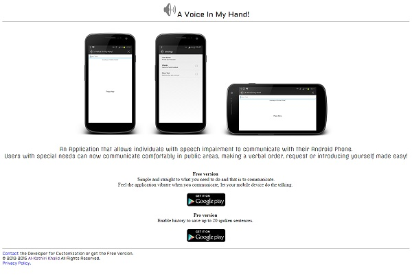
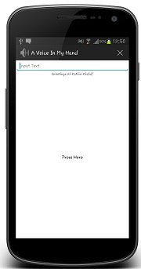

I´m a Software Engineer, International Corporate Trainer, Technical Content Developer and Author.


A Voice In My Hand
Users with speech impairment can now communicate comfortably in public areas, making a verbal order, request or introducing yourself made easy.


Sprint for Portfolio
Far far away, behind the word mountains, far from the countries Vokalia and Consonantia, there live the blind texts.


Display for Business Website
Far far away, behind the word mountains, far from the countries Vokalia and Consonantia, there live the blind texts.


Slant for Creatives
Far far away, behind the word mountains, far from the countries Vokalia and Consonantia, there live the blind texts.